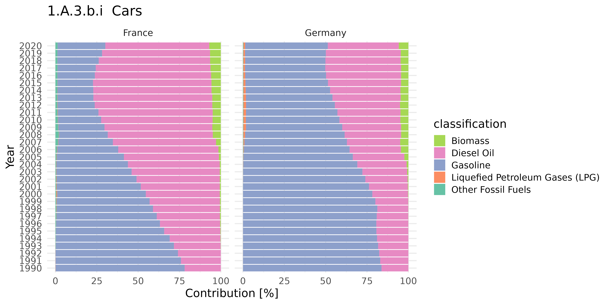

remis uses the UNFCCC Data Interface Flexible Query API
to download Inventory Data. At a later stage, functions for downloading
Compilation and Accounting Data (cad and
cadCP2) will be included.
Data downloads via queries require a variable for a specific party and
year, which are referred to via unique id’s. While party
and year id’s are linked to respective data in a fairly
straight-forward manner (e.g., single country or year), variable ids are
unique descriptors for a combination of data sources consisting of:
- category
- classification
- measurement
- gas
- unit
The above are referred to as ccmgu’s.
Initializing remis with rem_init provides a
list with several objects to inspect available data and query for it.
These include id overviews for parties, years,
ccmgu’s, as well as respective variable tables and the query
object for requests .req.
library(remis)
library(dplyr)
#>
#> Attaching package: 'dplyr'
#> The following objects are masked from 'package:stats':
#>
#> filter, lag
#> The following objects are masked from 'package:base':
#>
#> intersect, setdiff, setequal, union
rem <- rem_init()
#> parsing api/parties/
#> parsing api/years/single
#> parsing api/dimension-instances/category
#> parsing api/dimension-instances/classification
#> parsing api/dimension-instances/measure
#> parsing api/dimension-instances/gas
#> parsing api/conversion/fq
#> parsing api/variables/fq/annexOne
#> parsing api/variables/fq/nonAnnexOne
names(rem)
#> [1] "parties" "years" "categories" "classification"
#> [5] "measures" "gas" "units" "variables"
#> [9] ".req"Note that only calls using the Flexible Query API are currently implemented. These allow interacting with data sources from:
- annexOne
- nonAnnexOne
- extData
Queries for data within cad and cadCP2 will be available in future versions.
Further details on the objects within rem are:
- parties - class: tbl_df, tbl, data.frame
- years - class: list
- categories - class: list
- classification - class: list
- measures - class: list
- gas - class: list
- units - class: list
- variables - class: list
- .req - class: HttpClient, R6
Building up Flexible Queries
Details on the Flexible Query API can be found in the official documentation of the Data Interface for UNFCCC.
Define whether annexOne or nonAnnexOne data shall be downloaded, and then:
- Select party
- Select year
- Choose variable based on
ccmgu’s - Execute query
Note, that objects in rem (excluding
parties) provide all data sources (where applicable)
reflected in the list items annexOne, nonAnnexOne, extData, cad,
cadCP2.
Example A
1. Select Party
Here we choose Germany and France.
# in RStudio:
# View(rem$parties)
parties_mask <- rem$parties$parties_code %in% c('DEU', 'FRA')
parties <- rem$parties[parties_mask, c('id', 'name', 'categoryCode')]
knitr::kable(parties)| id | name | categoryCode |
|---|---|---|
| 23 | France | annexOne |
| 13 | Germany | annexOne |
Note, that both parties are in Annex I.
2. Select years
We will select all years from 1990 to the latest inventory year (2020).
# base year has id = 0
years <- rem$years$annexOne[rem$years$annexOne$id != 0, ]
knitr::kable(years)| id | name | |
|---|---|---|
| 2 | 32 | 1990 |
| 3 | 33 | 1991 |
| 4 | 34 | 1992 |
| 5 | 35 | 1993 |
| 6 | 36 | 1994 |
| 7 | 37 | 1995 |
| 8 | 38 | 1996 |
| 9 | 39 | 1997 |
| 10 | 40 | 1998 |
| 11 | 41 | 1999 |
| 12 | 42 | 2000 |
| 13 | 43 | 2001 |
| 14 | 44 | 2002 |
| 15 | 45 | 2003 |
| 16 | 46 | 2004 |
| 17 | 47 | 2005 |
| 18 | 48 | 2006 |
| 19 | 49 | 2007 |
| 20 | 50 | 2008 |
| 21 | 51 | 2009 |
| 22 | 52 | 2010 |
| 23 | 53 | 2011 |
| 24 | 54 | 2012 |
| 25 | 55 | 2013 |
| 26 | 56 | 2014 |
| 27 | 57 | 2015 |
| 28 | 58 | 2016 |
| 29 | 59 | 2017 |
| 30 | 60 | 2018 |
| 31 | 61 | 2019 |
| 32 | 62 | Last Inventory Year (2020) |
3. Select from ccmug’s
The selection of ccmug’s is possible is several ways.
Ideally, one item of interest should be selected, such as a category or
a measure, through which the appropriate variable for querying is
identified. This can be done either by browsing in RStudio
with View(rem) and using the interactive filter function,
or by searching programmatically. The example below shows the
latter.
Here, we assume an interest in emissions from cars in the transportation sector by fuel type and in total in the CRF-Category 1.A.3.b.i Cars (id = 9279). Therefore, we begin with category as our starting point.
# parties are annexOne, thus:
category_mask <- grepl('1.A.3.b.i Cars', rem$categories$annexOne$name)
category <- rem$categories$annexOne[category_mask, ]
knitr::kable(as.data.frame(t(category)))| V1 | |
|---|---|
| id | 9279 |
| level_1 | Totals |
| level_2 | Total GHG emissions with LULUCF |
| level_3 | 1. Energy |
| level_4 | 1.AA Fuel Combustion - Sectoral approach |
| level_5 | 1.A.3 Transport |
| level_6 | 1.A.3.b Road Transportation |
| level_7 | 1.A.3.b.i Cars |
| level_8 | NA |
| name | 1.A.3.b.i Cars |
The table above also highlights the nesting structure throughout the CRF-Category tree.
Next, find appropriate variables (i.e. combination of ccmug’s) that contain our category of interest.
variables <- select_varid(
vars = rem$variables$annexOne,
category_id = category$id)
knitr::kable(head(variables, 20))| variableId | categoryId | classificationId | measureId | gasId | unitId | |
|---|---|---|---|---|---|---|
| 1260 | 926297 | 9279 | 10542 | 10460 | 10469 | 5 |
| 1264 | 926583 | 9279 | 10513 | 10460 | 10469 | 5 |
| 1863 | 17578 | 9279 | 10510 | 10460 | 10468 | 5 |
| 2906 | 924906 | 9279 | 10538 | 10460 | 10471 | 5 |
| 2924 | 926278 | 9279 | 10528 | 10460 | 10468 | 5 |
| 2935 | 926628 | 9279 | 10525 | 10460 | 10469 | 5 |
| 3488 | 928626 | 9279 | 10524 | 10591 | 10469 | 28 |
| 3493 | 928580 | 9279 | 10513 | 10591 | 10469 | 28 |
| 3494 | 928586 | 9279 | 10525 | 10591 | 10469 | 28 |
| 3495 | 928544 | 9279 | 10528 | 10591 | 10469 | 28 |
| 3548 | 928524 | 9279 | 10520 | 10591 | 10469 | 28 |
| 4868 | 924766 | 9279 | 10525 | 10460 | 10468 | 5 |
| 4877 | 926287 | 9279 | 10520 | 10460 | 10469 | 5 |
| 4884 | 925785 | 9279 | 10530 | 10460 | 10471 | 5 |
| 4893 | 94409 | 9279 | 10510 | 10460 | 10471 | 5 |
| 5342 | 925496 | 9279 | 10513 | 10460 | 10468 | 5 |
| 5358 | 925453 | 9279 | 10524 | 10460 | 10469 | 5 |
| 5396 | 925435 | 9279 | 10538 | 10460 | 10468 | 5 |
| 5397 | 925469 | 9279 | 10524 | 10460 | 10471 | 5 |
| 5398 | 926637 | 9279 | 10520 | 10460 | 10468 | 5 |
There are a total of 60 variable combinations that include our
category of interest. Note that select_varid() also allows
selections by including other ccmugs to be more specific.
Let’s inspect the variables in a more human-readable format:
variables_text <- get_variables(
rms = rem,
ids = variables$variableId)
knitr::kable(variables_text[order(variables_text$classification, variables_text$measure), ])| variable_id | reporting | category | classification | measure | gas | unit | |
|---|---|---|---|---|---|---|---|
| 40 | 927370 | annexOne | 1.A.3.b.i Cars | Biomass | Fuel Consumption | No gas | TJ |
| 8 | 928580 | annexOne | 1.A.3.b.i Cars | Biomass | Implied emission factor | CO₂ | t/TJ |
| 46 | 928896 | annexOne | 1.A.3.b.i Cars | Biomass | Implied emission factor | CH₄ | kg/TJ |
| 51 | 928872 | annexOne | 1.A.3.b.i Cars | Biomass | Implied emission factor | N₂O | kg/TJ |
| 2 | 926583 | annexOne | 1.A.3.b.i Cars | Biomass | Net emissions/removals | CO₂ | kt |
| 16 | 925496 | annexOne | 1.A.3.b.i Cars | Biomass | Net emissions/removals | CH₄ | kt |
| 23 | 926374 | annexOne | 1.A.3.b.i Cars | Biomass | Net emissions/removals | N₂O | kt |
| 49 | 200184 | annexOne | 1.A.3.b.i Cars | Biomass | Net emissions/removals | Aggregate GHGs | kt CO₂ equivalent |
| 41 | 927427 | annexOne | 1.A.3.b.i Cars | Diesel Oil | Fuel Consumption | No gas | TJ |
| 11 | 928524 | annexOne | 1.A.3.b.i Cars | Diesel Oil | Implied emission factor | CO₂ | t/TJ |
| 54 | 928966 | annexOne | 1.A.3.b.i Cars | Diesel Oil | Implied emission factor | CH₄ | kg/TJ |
| 55 | 928873 | annexOne | 1.A.3.b.i Cars | Diesel Oil | Implied emission factor | N₂O | kg/TJ |
| 13 | 926287 | annexOne | 1.A.3.b.i Cars | Diesel Oil | Net emissions/removals | CO₂ | kt |
| 20 | 926637 | annexOne | 1.A.3.b.i Cars | Diesel Oil | Net emissions/removals | CH₄ | kt |
| 22 | 926785 | annexOne | 1.A.3.b.i Cars | Diesel Oil | Net emissions/removals | N₂O | kt |
| 58 | 200185 | annexOne | 1.A.3.b.i Cars | Diesel Oil | Net emissions/removals | Aggregate GHGs | kt CO₂ equivalent |
| 39 | 927327 | annexOne | 1.A.3.b.i Cars | Gaseous Fuels | Fuel Consumption | No gas | TJ |
| 7 | 928626 | annexOne | 1.A.3.b.i Cars | Gaseous Fuels | Implied emission factor | CO₂ | t/TJ |
| 45 | 928864 | annexOne | 1.A.3.b.i Cars | Gaseous Fuels | Implied emission factor | CH₄ | kg/TJ |
| 53 | 928708 | annexOne | 1.A.3.b.i Cars | Gaseous Fuels | Implied emission factor | N₂O | kg/TJ |
| 17 | 925453 | annexOne | 1.A.3.b.i Cars | Gaseous Fuels | Net emissions/removals | CO₂ | kt |
| 19 | 925469 | annexOne | 1.A.3.b.i Cars | Gaseous Fuels | Net emissions/removals | N₂O | kt |
| 25 | 924937 | annexOne | 1.A.3.b.i Cars | Gaseous Fuels | Net emissions/removals | CH₄ | kt |
| 60 | 200186 | annexOne | 1.A.3.b.i Cars | Gaseous Fuels | Net emissions/removals | Aggregate GHGs | kt CO₂ equivalent |
| 38 | 927449 | annexOne | 1.A.3.b.i Cars | Gasoline | Fuel Consumption | No gas | TJ |
| 9 | 928586 | annexOne | 1.A.3.b.i Cars | Gasoline | Implied emission factor | CO₂ | t/TJ |
| 44 | 928849 | annexOne | 1.A.3.b.i Cars | Gasoline | Implied emission factor | N₂O | kg/TJ |
| 52 | 928909 | annexOne | 1.A.3.b.i Cars | Gasoline | Implied emission factor | CH₄ | kg/TJ |
| 6 | 926628 | annexOne | 1.A.3.b.i Cars | Gasoline | Net emissions/removals | CO₂ | kt |
| 12 | 924766 | annexOne | 1.A.3.b.i Cars | Gasoline | Net emissions/removals | CH₄ | kt |
| 27 | 926275 | annexOne | 1.A.3.b.i Cars | Gasoline | Net emissions/removals | N₂O | kt |
| 56 | 200187 | annexOne | 1.A.3.b.i Cars | Gasoline | Net emissions/removals | Aggregate GHGs | kt CO₂ equivalent |
| 34 | 927111 | annexOne | 1.A.3.b.i Cars | Liquefied Petroleum Gases (LPG) | Fuel Consumption | No gas | TJ |
| 10 | 928544 | annexOne | 1.A.3.b.i Cars | Liquefied Petroleum Gases (LPG) | Implied emission factor | CO₂ | t/TJ |
| 42 | 928803 | annexOne | 1.A.3.b.i Cars | Liquefied Petroleum Gases (LPG) | Implied emission factor | CH₄ | kg/TJ |
| 43 | 928813 | annexOne | 1.A.3.b.i Cars | Liquefied Petroleum Gases (LPG) | Implied emission factor | N₂O | kg/TJ |
| 5 | 926278 | annexOne | 1.A.3.b.i Cars | Liquefied Petroleum Gases (LPG) | Net emissions/removals | CH₄ | kt |
| 28 | 926309 | annexOne | 1.A.3.b.i Cars | Liquefied Petroleum Gases (LPG) | Net emissions/removals | CO₂ | kt |
| 32 | 926280 | annexOne | 1.A.3.b.i Cars | Liquefied Petroleum Gases (LPG) | Net emissions/removals | N₂O | kt |
| 57 | 200188 | annexOne | 1.A.3.b.i Cars | Liquefied Petroleum Gases (LPG) | Net emissions/removals | Aggregate GHGs | kt CO₂ equivalent |
| 36 | 927130 | annexOne | 1.A.3.b.i Cars | Liquid Fuels | Fuel Consumption | No gas | TJ |
| 14 | 925785 | annexOne | 1.A.3.b.i Cars | Liquid Fuels | Net emissions/removals | N₂O | kt |
| 30 | 925125 | annexOne | 1.A.3.b.i Cars | Liquid Fuels | Net emissions/removals | CH₄ | kt |
| 31 | 924993 | annexOne | 1.A.3.b.i Cars | Liquid Fuels | Net emissions/removals | CO₂ | kt |
| 47 | 200189 | annexOne | 1.A.3.b.i Cars | Liquid Fuels | Net emissions/removals | Aggregate GHGs | kt CO₂ equivalent |
| 33 | 927199 | annexOne | 1.A.3.b.i Cars | Other Fossil Fuels | Fuel Consumption | No gas | TJ |
| 4 | 924906 | annexOne | 1.A.3.b.i Cars | Other Fossil Fuels | Net emissions/removals | N₂O | kt |
| 18 | 925435 | annexOne | 1.A.3.b.i Cars | Other Fossil Fuels | Net emissions/removals | CH₄ | kt |
| 24 | 925688 | annexOne | 1.A.3.b.i Cars | Other Fossil Fuels | Net emissions/removals | CO₂ | kt |
| 48 | 200190 | annexOne | 1.A.3.b.i Cars | Other Fossil Fuels | Net emissions/removals | Aggregate GHGs | kt CO₂ equivalent |
| 35 | 927097 | annexOne | 1.A.3.b.i Cars | Other Liquid Fuels | Fuel Consumption | No gas | TJ |
| 1 | 926297 | annexOne | 1.A.3.b.i Cars | Other Liquid Fuels | Net emissions/removals | CO₂ | kt |
| 26 | 926180 | annexOne | 1.A.3.b.i Cars | Other Liquid Fuels | Net emissions/removals | CH₄ | kt |
| 29 | 926080 | annexOne | 1.A.3.b.i Cars | Other Liquid Fuels | Net emissions/removals | N₂O | kt |
| 50 | 200191 | annexOne | 1.A.3.b.i Cars | Other Liquid Fuels | Net emissions/removals | Aggregate GHGs | kt CO₂ equivalent |
| 37 | 927247 | annexOne | 1.A.3.b.i Cars | Total for category | Fuel Consumption | No gas | TJ |
| 3 | 17578 | annexOne | 1.A.3.b.i Cars | Total for category | Net emissions/removals | CH₄ | kt |
| 15 | 94409 | annexOne | 1.A.3.b.i Cars | Total for category | Net emissions/removals | N₂O | kt |
| 21 | 173310 | annexOne | 1.A.3.b.i Cars | Total for category | Net emissions/removals | CO₂ | kt |
| 59 | 715050 | annexOne | 1.A.3.b.i Cars | Total for category | Net emissions/removals | Aggregate GHGs | kt CO₂ equivalent |
Next, we filter for the desired measure
Net emissions/removals and gas
Aggregate GHGs:
var_ids <- variables_text[variables_text$measure=="Net emissions/removals" &
variables_text$gas=="Aggregate GHGs", ]
knitr::kable(var_ids)| variable_id | reporting | category | classification | measure | gas | unit | |
|---|---|---|---|---|---|---|---|
| 47 | 200189 | annexOne | 1.A.3.b.i Cars | Liquid Fuels | Net emissions/removals | Aggregate GHGs | kt CO₂ equivalent |
| 48 | 200190 | annexOne | 1.A.3.b.i Cars | Other Fossil Fuels | Net emissions/removals | Aggregate GHGs | kt CO₂ equivalent |
| 49 | 200184 | annexOne | 1.A.3.b.i Cars | Biomass | Net emissions/removals | Aggregate GHGs | kt CO₂ equivalent |
| 50 | 200191 | annexOne | 1.A.3.b.i Cars | Other Liquid Fuels | Net emissions/removals | Aggregate GHGs | kt CO₂ equivalent |
| 56 | 200187 | annexOne | 1.A.3.b.i Cars | Gasoline | Net emissions/removals | Aggregate GHGs | kt CO₂ equivalent |
| 57 | 200188 | annexOne | 1.A.3.b.i Cars | Liquefied Petroleum Gases (LPG) | Net emissions/removals | Aggregate GHGs | kt CO₂ equivalent |
| 58 | 200185 | annexOne | 1.A.3.b.i Cars | Diesel Oil | Net emissions/removals | Aggregate GHGs | kt CO₂ equivalent |
| 59 | 715050 | annexOne | 1.A.3.b.i Cars | Total for category | Net emissions/removals | Aggregate GHGs | kt CO₂ equivalent |
| 60 | 200186 | annexOne | 1.A.3.b.i Cars | Gaseous Fuels | Net emissions/removals | Aggregate GHGs | kt CO₂ equivalent |
All relevant information (e.g., units, type of gas) are provided
here. In addition, unit conversion factors can be identified by looking
up relevant source and target units in rem$units$units and
cross-referencing them in rem$units$annexOne.
4. Query for download
Queries using the Flexible Query API are done
flex_query(), which uses the .req object in
rem to make a POST request:
result <- flex_query(
rem,
variable_ids = var_ids$variable_id,
party_ids = parties$id,
year_ids = years$id,
pretty = TRUE)
knitr::kable(head(result, 20))| parties | years | variable_id | reporting | category | classification | measure | gas | unit | number_value | string_value |
|---|---|---|---|---|---|---|---|---|---|---|
| Germany | 1990 | 200184 | annexOne | 1.A.3.b.i Cars | Biomass | Net emissions/removals | Aggregate GHGs | kt CO₂ equivalent | NA | NA |
| Germany | 1991 | 200184 | annexOne | 1.A.3.b.i Cars | Biomass | Net emissions/removals | Aggregate GHGs | kt CO₂ equivalent | NA | NA |
| Germany | 1992 | 200184 | annexOne | 1.A.3.b.i Cars | Biomass | Net emissions/removals | Aggregate GHGs | kt CO₂ equivalent | NA | NA |
| Germany | 1993 | 200184 | annexOne | 1.A.3.b.i Cars | Biomass | Net emissions/removals | Aggregate GHGs | kt CO₂ equivalent | NA | NA |
| Germany | 1994 | 200184 | annexOne | 1.A.3.b.i Cars | Biomass | Net emissions/removals | Aggregate GHGs | kt CO₂ equivalent | NA | NA |
| Germany | 1995 | 200184 | annexOne | 1.A.3.b.i Cars | Biomass | Net emissions/removals | Aggregate GHGs | kt CO₂ equivalent | 33.78233 | NA |
| Germany | 1996 | 200184 | annexOne | 1.A.3.b.i Cars | Biomass | Net emissions/removals | Aggregate GHGs | kt CO₂ equivalent | 46.03468 | NA |
| Germany | 1997 | 200184 | annexOne | 1.A.3.b.i Cars | Biomass | Net emissions/removals | Aggregate GHGs | kt CO₂ equivalent | 79.19863 | NA |
| Germany | 1998 | 200184 | annexOne | 1.A.3.b.i Cars | Biomass | Net emissions/removals | Aggregate GHGs | kt CO₂ equivalent | 82.90973 | NA |
| Germany | 1999 | 200184 | annexOne | 1.A.3.b.i Cars | Biomass | Net emissions/removals | Aggregate GHGs | kt CO₂ equivalent | 109.39233 | NA |
| Germany | 2000 | 200184 | annexOne | 1.A.3.b.i Cars | Biomass | Net emissions/removals | Aggregate GHGs | kt CO₂ equivalent | 261.02488 | NA |
| Germany | 2001 | 200184 | annexOne | 1.A.3.b.i Cars | Biomass | Net emissions/removals | Aggregate GHGs | kt CO₂ equivalent | 389.07220 | NA |
| Germany | 2002 | 200184 | annexOne | 1.A.3.b.i Cars | Biomass | Net emissions/removals | Aggregate GHGs | kt CO₂ equivalent | 512.62435 | NA |
| Germany | 2003 | 200184 | annexOne | 1.A.3.b.i Cars | Biomass | Net emissions/removals | Aggregate GHGs | kt CO₂ equivalent | 793.73382 | NA |
| Germany | 2004 | 200184 | annexOne | 1.A.3.b.i Cars | Biomass | Net emissions/removals | Aggregate GHGs | kt CO₂ equivalent | 1193.50417 | NA |
| Germany | 2005 | 200184 | annexOne | 1.A.3.b.i Cars | Biomass | Net emissions/removals | Aggregate GHGs | kt CO₂ equivalent | 2614.46296 | NA |
| Germany | 2006 | 200184 | annexOne | 1.A.3.b.i Cars | Biomass | Net emissions/removals | Aggregate GHGs | kt CO₂ equivalent | 4668.01095 | NA |
| Germany | 2007 | 200184 | annexOne | 1.A.3.b.i Cars | Biomass | Net emissions/removals | Aggregate GHGs | kt CO₂ equivalent | 5080.86875 | NA |
| Germany | 2008 | 200184 | annexOne | 1.A.3.b.i Cars | Biomass | Net emissions/removals | Aggregate GHGs | kt CO₂ equivalent | 4435.05037 | NA |
| Germany | 2009 | 200184 | annexOne | 1.A.3.b.i Cars | Biomass | Net emissions/removals | Aggregate GHGs | kt CO₂ equivalent | 4446.86238 | NA |
See results:
library(ggplot2)
result %>%
mutate(years = as.numeric(gsub('[^0-9]', "", result$years, perl = TRUE))) %>%
ggplot(aes(x = years, y = number_value, color = parties)) +
geom_line() +
facet_wrap(~classification, scales = "free_y") +
labs(y = sprintf('GHG-Emissions [%s]', unique(result$unit)),
title = unique(result$category)) +
theme_minimal(base_size = 16) +
theme(legend.position = 'top', legend.direction = 'horizontal')
#> Warning: Removed 7 rows containing missing values (`geom_line()`).
`%nin%` <- Negate(`%in%`)
result %>%
mutate(years = as.numeric(gsub('[^0-9]', "", years, perl = TRUE))) %>%
filter(classification %nin% c('Total for category', 'Gaseous Fuels', 'Liquid Fuels')) %>%
group_by(parties, years) %>%
mutate(percent_contribution = number_value/sum(number_value, na.rm = TRUE) * 100,
) %>%
ggplot(aes(y = as.factor(years), x = percent_contribution, fill = classification)) +
geom_bar(stat = 'identity') +
facet_wrap(~parties) +
labs(x = 'Contribution [%]',
y = 'Year',
title = unique(result$category)) +
theme_minimal(base_size = 16) +
scale_fill_brewer(palette = 'Set2', direction = -1)
#> Warning: Removed 76 rows containing missing values (`position_stack()`).
Example B
Here we will exploit the Flexible Queries API to download
extData, focusing on the World Bank population data.
| id | level_1 | level_2 | name |
|---|---|---|---|
| 10501 | External Data | NA | External Data |
| 10502 | External Data | Country Area | Country Area |
| 10503 | External Data | Gross Domestic Product - GDP | Gross Domestic Product - GDP |
| 10504 | External Data | Population | Population |
# from extData - select Population Category:
category_mask <- grepl('Population', rem$categories$extData$name, fixed = FALSE)
category <- rem$categories$extData[category_mask, ]
# find variableIds containing population - ensure appropriate annex category
# is used here based on desired party
var_ids <- select_varid(vars = rem$variables$annexOne, category_id = category$id)
# check and confirm desired variable is correct
get_variables(rms = rem, var_ids$variableId)
#> variable_id reporting category classification measure gas
#> 1 188991 extData Population Total for category Total population No gas
#> unit
#> 1 thousands
population <- flex_query(
rms = rem,
variable_ids = var_ids$variableId,
party_ids = parties$id,
year_ids = years$id)
population %>%
mutate(years = as.numeric(gsub('[^0-9]', "", years, perl = TRUE))) %>%
ggplot(aes(x = years, y = number_value, color = parties)) +
geom_line(linewidth = 1.5) +
labs(y = sprintf('Population [%s]', unique(population$unit)),
title = unique(population$category)) +
theme_minimal(base_size = 16) +
theme(legend.position = 'top', legend.direction = 'horizontal')
Example C
The code below downloads and visualizes a time series which was used in a decomposition analyses in the Biennial Report of the Expert Council on Climate Change issues, as given in Table 4, p. 220. The data is from Table1.A(a)s1 of the National Inventory Report after UNFCCC, CRF-Category 1.A.1.a Public Electricity and Heat Production.
# check
cat1A1a <- rem$categories$annexOne[grepl("1.A.1.a.", rem$categories$annexOne$name), ]
# manually choose id
# cat1A1a$id[1]
# get variables
cat1A1a_variables <- get_variables(
rms = rem,
select_varid(vars = rem$variables$annexOne, cat1A1a$id[1])$variableId
)
#choose id:
var_id <- cat1A1a_variables %>%
filter(classification == 'Total for category',
gas == 'Aggregate GHGs'
) %>%
dplyr::glimpse() %>%
dplyr::pull(variable_id)
#> Rows: 1
#> Columns: 7
#> $ variable_id <int> 714972
#> $ reporting <chr> "annexOne"
#> $ category <chr> "1.A.1.a Public Electricity and Heat Production"
#> $ classification <chr> "Total for category"
#> $ measure <chr> "Net emissions/removals"
#> $ gas <chr> "Aggregate GHGs"
#> $ unit <chr> "kt CO₂ equivalent"
# download data
cat1A1a_agg_ghg <- flex_query(
rms = rem,
variable_ids = var_id,
party_ids = 13,
year_ids = rem$years$annexOne$id)
# data includes year = "base year",
# for most parties this = 1990, but may vary.
# the code below replaces 'Base year' with NA, and thus discards the observation.
# see UNFCCC API documentation
cat1A1a_agg_ghg %>%
mutate(years = as.numeric(gsub('[^0-9]', "", years, perl = TRUE))) %>%
ggplot(aes(x = years, y = number_value)) +
geom_line(linewidth = 1, color = 'steelblue') +
geom_point(color = 'steelblue', size = 3) +
labs(y = sprintf('GHG-Emissions [%s]', unique(cat1A1a_agg_ghg$unit)),
title = unique(cat1A1a_agg_ghg$category)) +
theme_minimal(base_size = 16) +
theme(legend.position = 'top', legend.direction = 'horizontal')
#> Warning: Removed 1 row containing missing values (`geom_line()`).
#> Warning: Removed 1 rows containing missing values (`geom_point()`).Meta Overview
Parties
Parties are stored in rem$parties
# up to 5th entry on parties
knitr::kable(rem$parties %>%
dplyr::group_by(name_code) %>%
dplyr::slice(1:3))| name_code | categoryCode | id | parties_code | name | parties_noData |
|---|---|---|---|---|---|
| Annex I | annexOne | 3 | AUS | Australia | NA |
| Annex I | annexOne | 4 | AUT | Austria | NA |
| Annex I | annexOne | 7 | BLR | Belarus | NA |
| Groups | annexOne | 1000001 | ANI | Annex I | NA |
| Groups | annexOne | 1000002 | ANEIT | Annex I EIT | NA |
| Groups | annexOne | 1000003 | ANNEIT | Annex I non-EIT | NA |
| Non Annex I | nonAnnexOne | 100064 | AFG | Afghanistan | NA |
| Non Annex I | nonAnnexOne | 100065 | ALB | Albania | NA |
| Non Annex I | nonAnnexOne | 100066 | DZA | Algeria | NA |
Years
Years are stored in rem$years for respective
| x |
|---|
| annexOne |
| nonAnnexOne |
| cad |
| cadCP2 |
knitr::kable(rem$years$annexOne)| id | name |
|---|---|
| 0 | Base year |
| 32 | 1990 |
| 33 | 1991 |
| 34 | 1992 |
| 35 | 1993 |
| 36 | 1994 |
| 37 | 1995 |
| 38 | 1996 |
| 39 | 1997 |
| 40 | 1998 |
| 41 | 1999 |
| 42 | 2000 |
| 43 | 2001 |
| 44 | 2002 |
| 45 | 2003 |
| 46 | 2004 |
| 47 | 2005 |
| 48 | 2006 |
| 49 | 2007 |
| 50 | 2008 |
| 51 | 2009 |
| 52 | 2010 |
| 53 | 2011 |
| 54 | 2012 |
| 55 | 2013 |
| 56 | 2014 |
| 57 | 2015 |
| 58 | 2016 |
| 59 | 2017 |
| 60 | 2018 |
| 61 | 2019 |
| 62 | Last Inventory Year (2020) |
Variable Overview (ccmug)
- select directly from variable table
- or choose one
ccmguand find corresponding variables
# set up API objectSections below give a brief overview on ccmgu’s.
Categories
Categories are UNFCCC CRF-Categories or categories under the
Compilation and Accounting Data. The tables for each category have an
id and a name column. Where nested
sub-categories exist, additional columns using the name
level_x (x = nesting depth) show the category
hierarchy.
| x |
|---|
| annexOne |
| nonAnnexOne |
| extData |
| cad |
| cadCP2 |
| id | level_1 | level_2 | level_3 | level_4 | level_5 | level_6 | level_7 | level_8 | name |
|---|---|---|---|---|---|---|---|---|---|
| 10465 | Totals | NA | NA | NA | NA | NA | NA | NA | Totals |
| 10479 | Totals | Total GHG emissions without LULUCF including indirect CO₂ | NA | NA | NA | NA | NA | NA | Total GHG emissions without LULUCF including indirect CO₂ |
| 10480 | Totals | Total GHG emissions with LULUCF including indirect CO₂ | NA | NA | NA | NA | NA | NA | Total GHG emissions with LULUCF including indirect CO₂ |
| 10464 | Totals | Total GHG emissions without LULUCF | NA | NA | NA | NA | NA | NA | Total GHG emissions without LULUCF |
| 8677 | Totals | Total GHG emissions with LULUCF | NA | NA | NA | NA | NA | NA | Total GHG emissions with LULUCF |
| 10481 | Totals | Total GHG emissions without LULUCF | 1. Energy | NA | NA | NA | NA | NA | 1. Energy |
| 10482 | Totals | Total GHG emissions without LULUCF | 2. Industrial Processes and Product Use | NA | NA | NA | NA | NA | 2. Industrial Processes and Product Use |
| 10483 | Totals | Total GHG emissions without LULUCF | 3. Agriculture | NA | NA | NA | NA | NA | 3. Agriculture |
| 10484 | Totals | Total GHG emissions without LULUCF | 5. Waste | NA | NA | NA | NA | NA | 5. Waste |
| 10485 | Totals | Total GHG emissions without LULUCF | 6. Other | NA | NA | NA | NA | NA | 6. Other |
| id | level_1 | level_2 | level_3 | level_4 | level_5 | level_6 | level_7 | level_8 | name |
|---|---|---|---|---|---|---|---|---|---|
| 9116 | Totals | Total GHG emissions with LULUCF | 1. Energy | 1.B Fugitive Emissions from Fuels | 1.B.1 Solid Fuels | 1.B.1.a Coal Mining and Handling | 1.B.1.a.i Underground Mines | NA | 1.B.1.a.i Underground Mines |
| 8573 | Totals | Total GHG emissions with LULUCF | 1. Energy | 1.B Fugitive Emissions from Fuels | 1.B.1 Solid Fuels | 1.B.1.a Coal Mining and Handling | 1.B.1.a.ii Surface Mines | NA | 1.B.1.a.ii Surface Mines |
| 9933 | Totals | Total GHG emissions with LULUCF | 1. Energy | 1.B Fugitive Emissions from Fuels | 1.B.1 Solid Fuels | 1.B.1.a Coal Mining and Handling | 1.B.1.a.i Underground Mines | 1.B.1.a.i.1 Mining Activities | 1.B.1.a.i.1 Mining Activities |
| 9427 | Totals | Total GHG emissions with LULUCF | 1. Energy | 1.B Fugitive Emissions from Fuels | 1.B.1 Solid Fuels | 1.B.1.a Coal Mining and Handling | 1.B.1.a.i Underground Mines | 1.B.1.a.i.2 Post-Mining Activities | 1.B.1.a.i.2 Post-Mining Activities |
| 8211 | Totals | Total GHG emissions with LULUCF | 1. Energy | 1.B Fugitive Emissions from Fuels | 1.B.1 Solid Fuels | 1.B.1.a Coal Mining and Handling | 1.B.1.a.i Underground Mines | 1.B.1.a.i.3 Abandoned Underground Mines | 1.B.1.a.i.3 Abandoned Underground Mines |
| 10282 | Totals | Total GHG emissions with LULUCF | 1. Energy | 1.B Fugitive Emissions from Fuels | 1.B.1 Solid Fuels | 1.B.1.a Coal Mining and Handling | 1.B.1.a.ii Surface Mines | 1.B.1.a.ii.1 Mining Activities | 1.B.1.a.ii.1 Mining Activities |
| 9601 | Totals | Total GHG emissions with LULUCF | 1. Energy | 1.B Fugitive Emissions from Fuels | 1.B.1 Solid Fuels | 1.B.1.a Coal Mining and Handling | 1.B.1.a.ii Surface Mines | 1.B.1.a.ii.2 Post-Mining Activities | 1.B.1.a.ii.2 Post-Mining Activities |
Classification
Classification differ based on respective sectors and/or CRF-Categories:
- Energy:
- Fuel Types
- Agriculture:
- Livestock types
- LULUCF/LUCF:
- LULUCF/LUCF activities
| id | name |
|---|---|
| 10510 | Total for category |
| 10511 | Anthracite |
| 10512 | Aviation Gasoline |
| 10513 | Biomass |
| 10514 | Bitumen |
| 10515 | BKB and Patent Fuel |
| 10516 | Coal Tar |
| 10517 | Coke Oven/Gas Coke |
| 10518 | Coking Coal |
| 10519 | Crude Oil |
Measures
Measures include:
| id | level_1 | level_2 | name |
|---|---|---|---|
| 10555 | Emissions | NA | Emissions |
| 10556 | Activity Data | NA | Activity Data |
| 10557 | Implied emission factors | NA | Implied emission factors |
| 10558 | Additional Information | NA | Additional Information |
| 10559 | Other Information | NA | Other Information |
| 10460 | Emissions | Net emissions/removals | Net emissions/removals |
| 10563 | Emissions | Indirect emissions | Indirect emissions |
| 10560 | Emissions | Amount captured | Amount captured |
| 10564 | Emissions | Recovery/Flaring | Recovery/Flaring |
| 10810 | Emissions | Emissions from manufacturing | Emissions from manufacturing |